Lap
Inguinal Hernia Repair
Indications
See hernia notes
TEPP follows.
Lap vs Open
Numerous studies (except one controversial one) show similar
recurrence rates with lap and open repairs
Less pain and earlier return to work with lap
In recurrent hernias, improved outcomes and less chance of injury to
the cord structures
Bilateral hernias can be repaired without 2 incisions
Preferable in obesity
Contraindications to Lap Approach
Cardiopulmonary disease that precludes penumoperitoneum
Renal transplantation.
Relatively contraindicated in:
- prior surgery of pre-peritoneal space
- prior laparotomy
- ascites
- large scrotal or incarcerated / strangulated hernias
- use of antiplatelets or systemic anticoagulation; low-dose aspirin
need not be stopped pre-operatively.
Special Preparation
Work-up
Besides usual, pay attention to risk factors that increase chances
of complications
- chronic cough, constipation, prostatism should be corrected
- weight loss and smoking cessation.
Note size and reducability, look for contralateral and umbilical
hernias,
Palpate both testicles and cords
Examine skin for fungal infections than can increase chances of mesh
infection
Document any pre-existing peripheral nerve involvement
Anatomical considerations
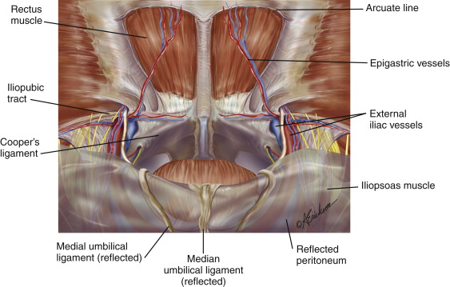
Coopers ligament =
pectineal ligament; attached to inguinal ligament by lacunar
ligament
Iliopubic tract = thickened
band over the external iliacs, where they become femorals, on abdo
side of inguinal ligament and loosely connected to it.
Hernias arise from the myopectineal
orifice
- bounded by arch of internal oblique and transversus abdominus
- inferiorly by pectineal ligament
- medially by rectus muscles
- laterally by the iliopsois muscle
Ie the inguinal ligament passes through this area obliquely
--> want to reduce all contents and cover the myopectineal
orifice with mesh.
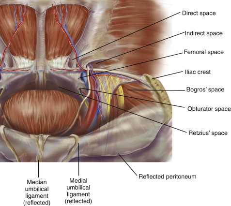
Space or Retzius and space of Bogros make up the working area
- Retzius = retropubic space; potential area anterior to bladder and
behind pubis.
- Bogros = lateral extension of Retzius, extends to ASIS.
--> these spaces should be fully developed in a sound repair.
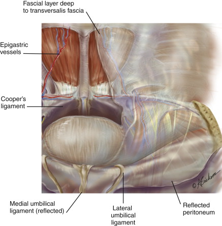
In preperitoneal space, deep to transversalis, is a fascia layer
analogous to Scarpa's.
- envelops gonadals and vas; inferior epigastrics, iliac vessels and
genitofemoral nerve are external to this layer in the 'parietal plane'
- internal to this layer is the 'visceral
plane', containing bladder and associated blood vessels.
As peritoneum is peeled off epigastrics, there will still be a thin
layer of covering tissue.
Same for cord structures and iliacs.
--> leaving these layers intact is important, as keeps mesh off
them, reducing complications of ischemic orchitis, fertility issues,
and fibrosis of the iliacs.
Want to approach the myopectineal orifice deep to this layer of
extraperitoneal fascia; in visceral plane; avoids risk of epigastric
bleeding and nerve injury.
- dissection lateral to the medial umbilical ligaments should occur
in the visceral plane of the extraperitoneal fascia
--> leaves parietal nerves (genital and femoral branches of
genitofemoral) and parietal vessels (inferior epigastric and iliac)
intact.
- dissection medial to the umbilical ligaments in space of Retzius
should take place in parietal plane to avoid urologic complications.
Positions of nerves:
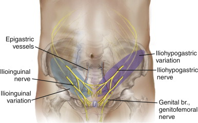
Prep
GA.
Patient should void urine before beginning.
Reduce hernia prior to procedure if possible.
Mark incisions in pre-op area
Supine, arms tucked in
First generation cephalosporin antibiotic prophylaxis
Operating table in slight trendelenburg
Monitor at foot of table
Stand on side opposite the hernia.
Procedure
1. 10 mm port infra-umbilically, pre-peritoneally
- through curved infraumbilical incision; open anterior sheath to
one side of midline, retract rectus laterally, insert finger
-->
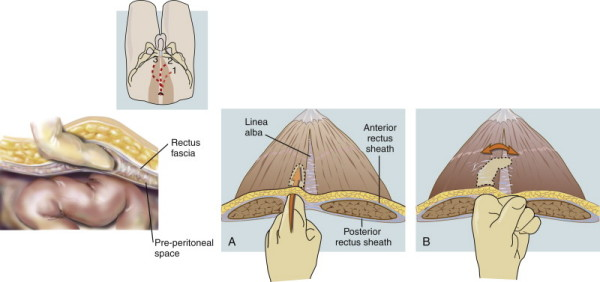
- this sweeps peritoneum away so that the trochars can be safely
placed.
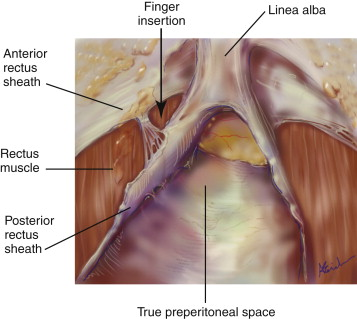
- S retractors on either side of the mideline, elevating the
anterior rectus sheaths.
- divide linear alba using Metzenbaums under direct vision
- Hasson inserted in this space and secured using stitches through
skin.
- Inflate pre-peritoneal space to 10mm Hg (12 if young) / balloon
dissector inserted and preperitoneal space dissected with
insufflated air
- Use a 10mm 30o scope; moving it side to side can divide remaining
adhesions.
2. Two low midline 5mm ports; good mobility here and will not bleed
through rectus.
- first one high, but not so high as to puncture the balloon
- both as close to umbilical trochar as possible
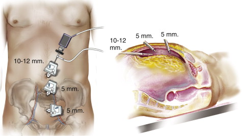
3. Dissected out preperitoneal space, displaying hernia anatomy
i) identify pubic symphasis in midline; safe landmark for
orientation.
--> do no dissection posterior to this or may injur the bladder.
ii) bluntly dissect coopers ligament bilaterally to open Space of
Retzius
- stay close to the ligament / pubic bone, using slow sweeping.
--> allows visualization of the femoral and obturator spaces and
keeps you in the parietal space.
iii) identify Hasselbach's triangle and the three potential sites of
herniation related to it (direct, femoral, obturator)
- femoral and direct spaces are separated by the medial aspect of
the iliopubic tract.
- direct hernia will obscure the pectineal ligament, readily
identifiable during initial dissection of preperitoneal space
- while convexity of the Hesselbach triangle indicates a large
indirect hernia.
iv) identify and elevate inferior epigastrics
v) bluntly develop space of Bogros to level of ASIS
4. Dissect off cord structures
- bluntly reduce hernias.
- direct sac by blunt peeling from attenuated transversalis fascia;
avoid sharp dissection
- use constant gentle traction and countertraction.
- if large, some suture redundant transversalis to iliopubic tract
to reduce seroma.
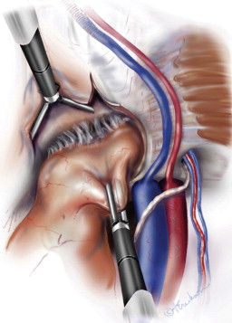
Elevate the inferior epigastrics with the rectus to limit bleeding.
- can control with direct pressure against the anterior abdominal
wall if necessary.
- occasionally, clips or cautery.
- elevate with one grasper, and develop space of Bogros laterally,
essential to place a decent mesh
Indirect space now indentifiable by finding cord structures passing
through the internal ring
- can see the indirect hernia overlying cord structures in me and
round ligament in women.
--> remember that round ligament / vas is always adjacent to the
epigastrics
--> if you can't see them, then they have in indirect hernia.
Reduce all lipomas before reducing the indirect hernia.
- lipomas are always on the upper outer quadrant of the indirect
ring.
--> this makes reduction easier and reduces chances of
recurrence.
Reduce the indirect sac by sweeping cord structures posteromedially
while holding the sac superolaterally.
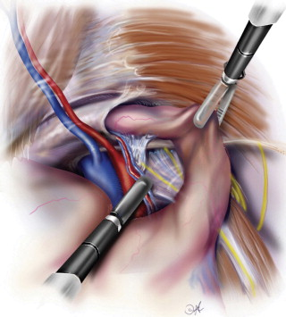
Sac then pivoted medially and posteriorly, while cord structures are
swept posterolaterally.
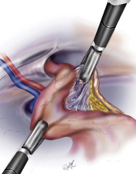
Alternating these two maneuvers allows separation of cord from sac.
Then reduce sac by passing hand over hand until delivered into
preperitoneal space.
Must remain within the visceral component o the extraperitoneal
space, this will protect those structures.
- i.e., keeps you away from the lateral cutaneous, femoral and
femoral branches of genitofemoral nerve.
- and iliac vessels must remain within the visceral component of the
extraperitoneal space.
- and do not denude the psoas lateral to the cord; keep these
membranes intact as much as possibe.
5. Place mesh
- 15cm2 lightweight polypropylene mesh trimmed to size and rolled
tightly, introduced through Hasson.
- over the hernia defect and the direct, indirect, and femoral
spaces
- fix superiorly and laterally but not in triangle of doom and
triangle of pain
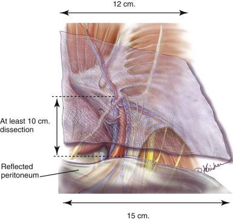
Mesh placed in space of Retzius; should extend from midline to ASIS
minus 1cm (2cm if very fat)
Should be diamond shaped, with tail extending out into space of
Bogros, lateral to medial umbilical ligaments.
Mesh should li ein the visceral plane of extraperitoneal fascia.
- allows parietal nerves (genital and femoral branches of gfem
nerves and parietal vessels to be safe
Medial to umbilical ligaments, mesh should lie more anteriorly in
the parietal plane of extraperitoneal fascia.
- avoids it sitting on the prevesical space, directly over bladder.
Do not slit the mesh; associated with recurrence.
Mesh should be slightly redundant because: it shrinks; reduces pain,
reduces recurrence.
Note that the mesh reinforces the visceral peritoneum or sac and not
the abdominal wall itself.
- no need to tack it in place, this increases the risk of pain.
- though some may find it helpful in their early experience to tack
onto the pectineal ligament medially
If bilateral repair, use two pieces and overlap them in the middle.
6. Remove trocar sheaths and desufflation under direct vision to
keeps mesh in place.
- local in wounds.
Alternatives and Controversies
Contralateral Hernias
Found in 10-15%
Routinely explore the contralateral side to exclude additional
hernias.
Rent in the peritoneum
Is problematic. Collaprses working space and abdomen
distands.
Can usually complete the job with full dissection of spaces of
Retzius and Bogros.
Large tears may need to be fixes with endoloops
Do not reduce pneuoperitoneum, e.g. with a dangerous Veres needles.
It will go away.
TAPP vs TEPP
TAPP has a larger working space and can access the preperitoneal
space in patients with previous surgery.
TEPP has advantages: shorter operating time, easier to get coverage
with mesh, no need for a tacking device
Prefer TEPP but no good evidence for one or other in terms of
recurrence or groin pain.
Recurrent hernias (last one open)
Fraught with risk, including pain, testicular loss, fertility
reduction, vascular and nerve injury.
Re-recurrence is higher.
Ideally suited to a laparoscopic approach.
- virgin tissue planes, visualize entire MPO, less pain, faster
return to normal activity, fewer complications, can look at other
side.
Numerous retrospective and prospective studies support superiority
- recurrence rates 10% open, 1% lap.
- less post-operative pain and reduced sick leave.
- avoids 3-5% open risk of ischaemic orchitis and testicular atrophy
- reduced risk of inguinal pain.
Always advisable to leave old mesh in-situ; may be embedded into
vital structures.
Recurrent hernias (last one lap)
Requires extensive experience, else should avoid it and go open.
TAPP may then be preferrable.
Incarcerated and scrotal hernia
Challenging; often have significant comorbidities.
Careful risk assessment
Risks of ischaemic orchitis, testicular loss, vas
injury, nerve injury, chronic pain.
Higher complications when done lap; especially seromas.
Femoral hernias
May be a higher rate in females after an initial lap inguinal
hernia repair.
Look for them and fix them in females.
Concurrent procedures
Safe and reasonable to do the TEP first, then close the
peritoneal flap and do a lap chole. Avoid dirty procedures.
Mobility
Patient can resume normal activities.
But avoid constipation.
Analgesia
Simple. Paracetamol and NSAIDs.
Complications
1. Bleeding
2. Wound infection
- if in preperitoneal space, mandates open exploration with mesh
removal if possible, copious irrigation and placement of drains,
long term antibiotics.
3. Seroma
- can differentiate from an early recurrence by reducibility or not.
- do not do needle drainage as can introduce mesh; they subside over
several weeks.
4. Bladder and bowel injuries
- rare
- abort the hernia repair if bowel injured and return at a later
date.
Chronic Groin Pain
1. Neuropathic pain
- nerve entrapped in mesh
- nerve entrapped by staples
- neuroma
2. Non-neuropathic pain
- hernia recurrence
- excessive scar
- pressure from mesh
- osteitis pubis
3. Visceral pain
- ischaemic orchitis
- spermatic cord inflammation.
Risk factors for chronic groin pain
- young, obese, pain pre-op, chronic pain disorders
- being gainfully employed and having private health insurance
- technique: mesh and tack placement, infection and recurrence.
Treatment of chronic pain
Watchful waiting after exclusion of serious cause
CT or MRI can rule out recurrence.
- but can be difficult to interpret
Pain management clinic, e.g. nerve blocks, acupuncture, tricyclics.
For those not improving at 6-12 months, consider surgery
- nerectomy of ilioinguinal, iliohypogastric and genitofemoral
nerves --> 80% success rates
- complex; need sensory testing to asses
- may need to consider removal of mesh or tacks for nerve entrapment
pain.